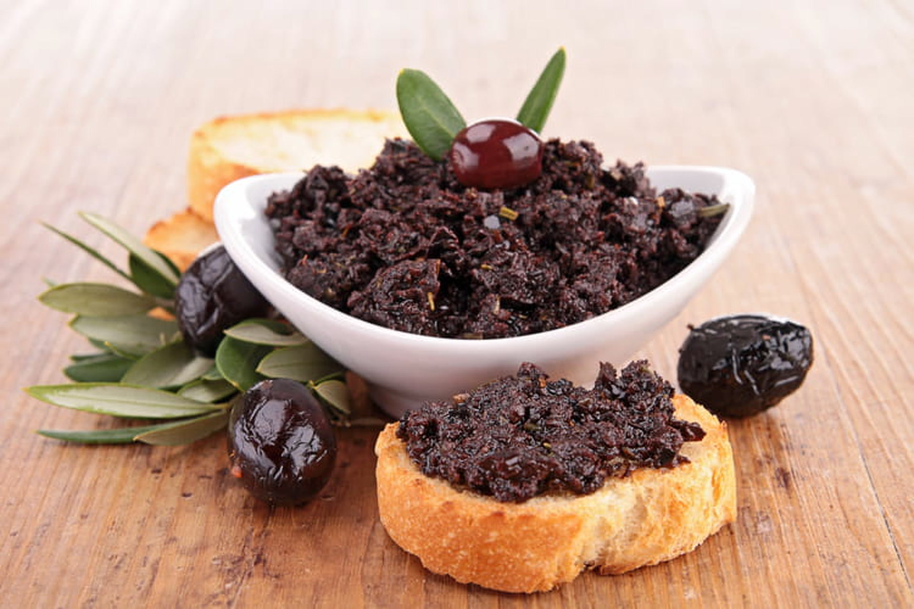

Tapenade

Ingrédients
- 60 g de câpres au vinaigre
- 50 g de filets d'anchois allongés à l'huile
- 400 g d'olives noires dénoyautées
- 1 gousse d'ail
- 15 cl d'huile d'olive
- Poivre
Instructions
- Égoutter les câpres et les olives.
- Retirer l'huile des anchois.
- Mettre tous les ingrédients dans un bol.
- Mixer à la girafe ou dans un robot jusqu'à obtenir une texture homogène.
Home